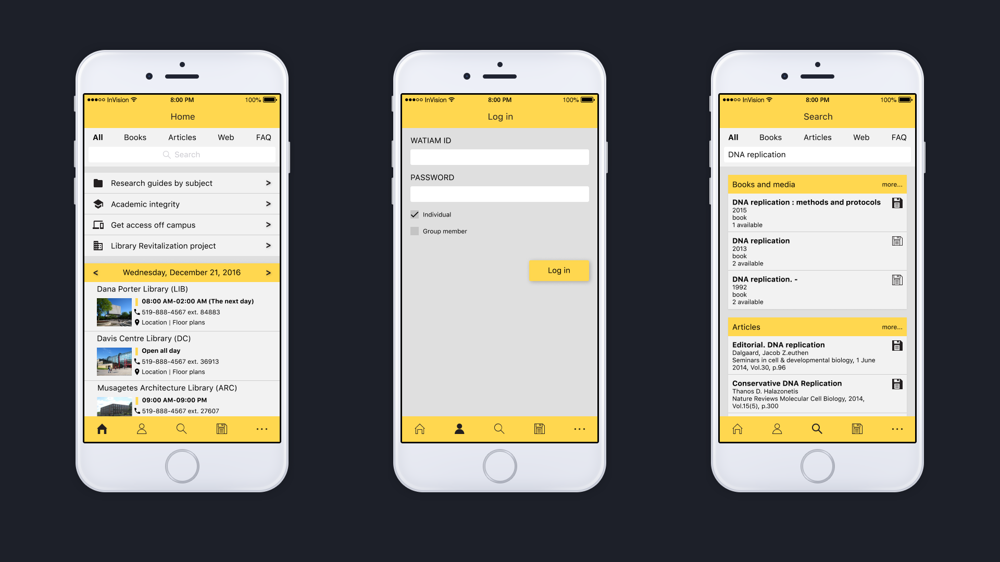
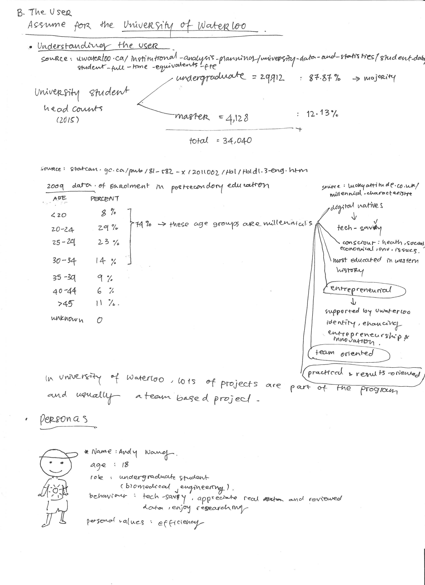
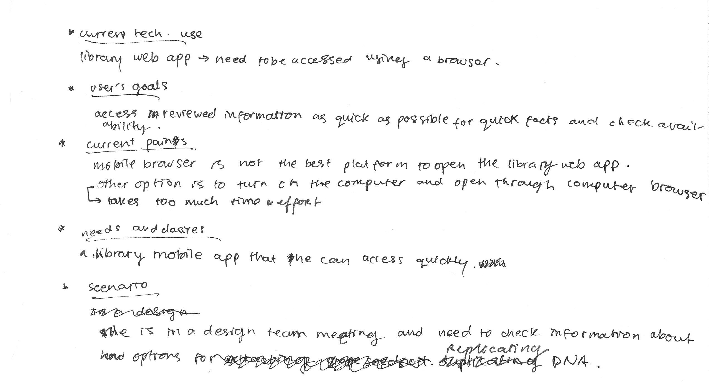
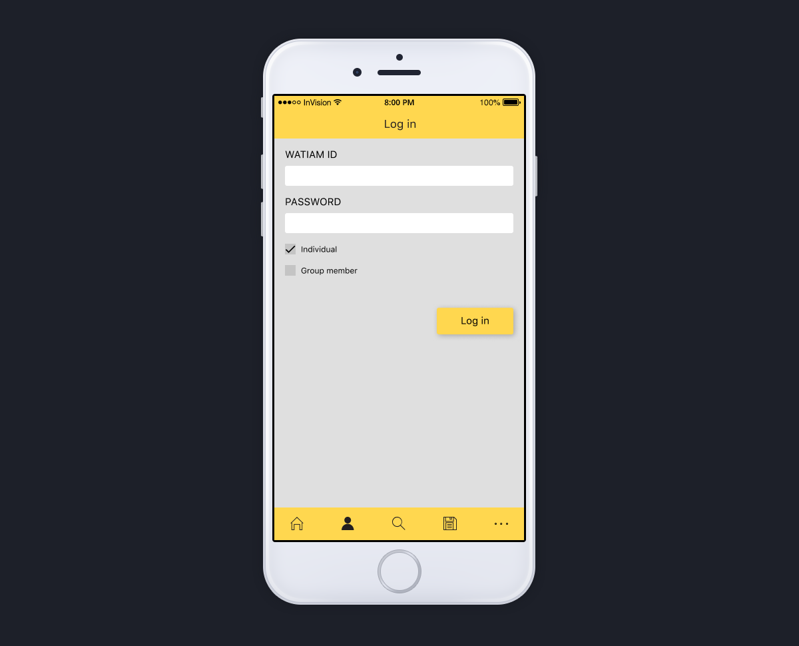
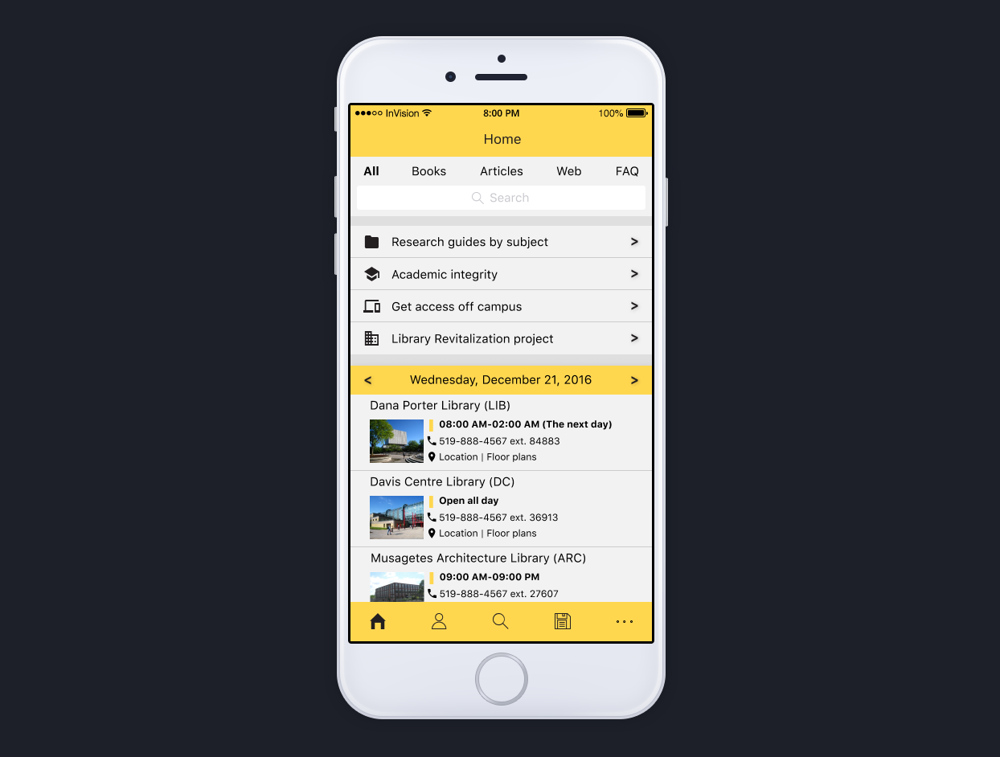
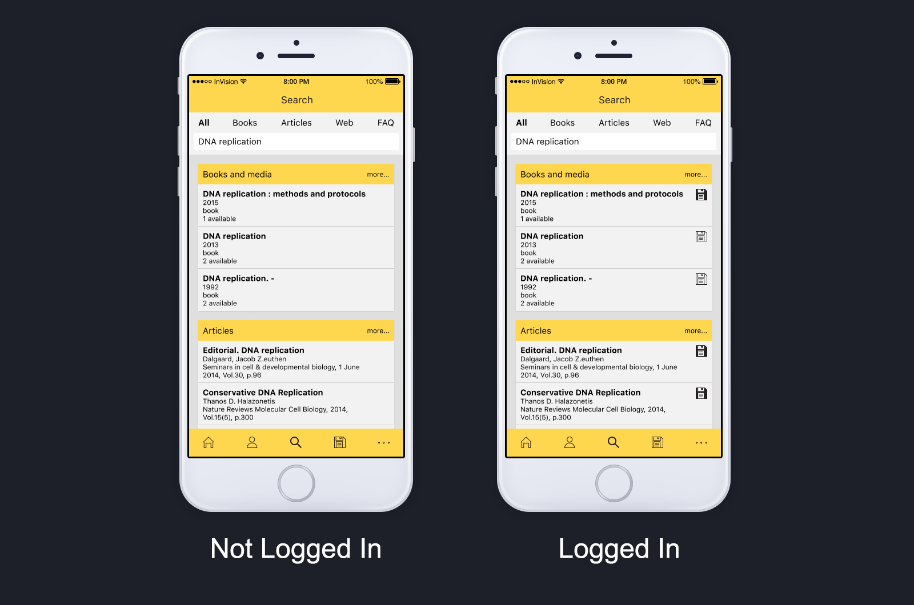
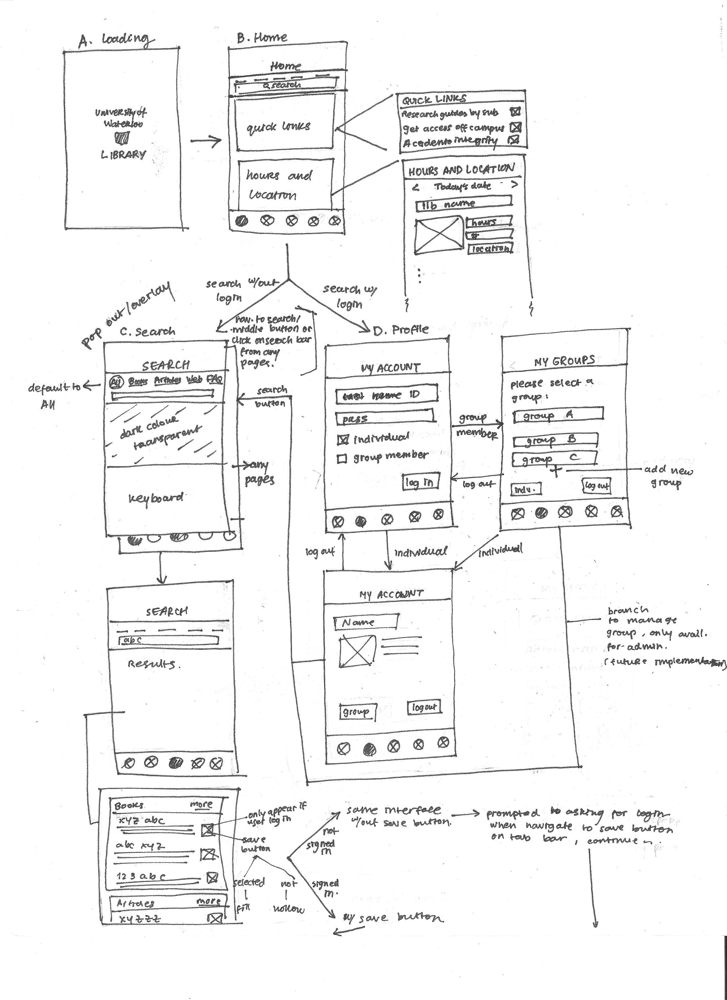
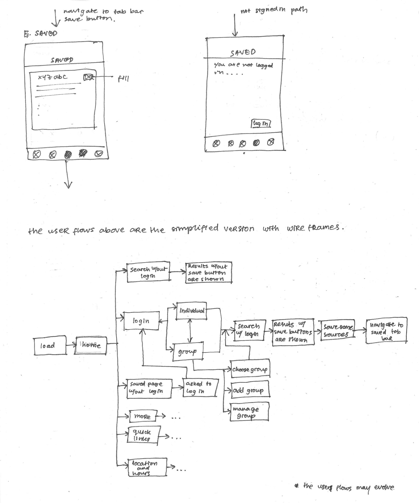

UWaterloo Library Mobile App Prototype
Role: Full-stack Designer
Tools: Photoshop, Illustrator, Figma, InVision

UWaterloo Library Mobile App prototype is a personal project. Its role will be a supplementary to the University of Waterloo library website (lib.uwaterloo.ca). The project was started with user research and analysis. After the user population was understood, features were chosen. To create a logical flow of the mobile app, user flows and wireframes were then created. Finally, a visual prototype was created using Figma and interactivity was added using InVision.
Goal
To create an intuitive UWaterloo library mobile application according to user’s needs and wants yet still incorporate The University of Waterloo brand and identity.
Approach
User research was done through online data gathering. Type of user was analyzed quantitatively and qualitatively. From those data, it is expected that the majority of the user will be millennials age around 17-34. A persona was then created to help to understand the values that matter the most to the user.


The user research helps to choose which features the potential user population will benefit and value the most. From the data, it is known that the potential user is tech-savvy, entrepreneurial, team oriented, practical, and results-oriented. From the persona perspective, team collaboration and efficiency are the most important values. Based on these characteristics and values, features were chosen, such as, quick search, group feature, and save source.
Group and Save Sources
The group and save source features correspond to the team oriented characteristic. The group feature allows each member to save or pin important sources that other members can see or read.

For save source feature, the user has to sign in to be able to save sources. The user can sign in as an individual or as a group member. In the University of Waterloo library website, the only way to sign in is by entering the user's’ last name and their WatCard barcode.This causes inconvenience. For instance, if the user wants to sign in and do not have their WatCard with them, unless they remember their WatCard barcode, they cannot access their account. To fix this problem, the sign-in system should be changed using WatIAM ID and password, which is the ID and password that students have to use to access their university account, either for academic or administrative purposes. For this reason, the UWaterloo library mobile app will use WatIAM ID and password for the sign-in system so that user can access their account without their WatCard.
Quick Search
The quick search features correspond to practical and results-oriented characteristics. This feature also corresponds to time efficiency. The quick search feature can be accessed through any pages by navigating the magnifying glass icon in the tab bar.

In the homepage, there are two ways to access quick search feature, either directly click on the search bar or click on the magnifying glass icon. The reason the search bar is shown explicitly is because it is one of the main features. It works as a redundancy and a more visual option of the default navigation for search feature (the magnifying glass icon). Presenting it explicitly in the homepage will allow the user to search quicker than from the magnifying glass icon because the user doesn't have to process the meaning of the magnifying glass icon to access the search feature, the search bar is more obvious to signify the search feature. On the other tabs (profile and saved), for the user to access search feature, they have to click on the magnifying glass icon. The reason to not show the search bar explicitly is because so that the user can focus on the task in those tabs (signing in or reviewing saved sources), thus the trade-off is removing the explicit search bar.

The results of the search will be displayed differently depending on whether the user is logged in or not. If the user is logged in regardless as an individual or a group member, the results will save button next to each source. If the user is not logged in, those button won’t be displayed, constraining the user from saving any sources.
Below are the user flows and wireframes of the UWaterloo library mobile app.


To access an interactive prototype of the UWaterloo library mobile app, click here.
What's next?
Create a more interactive prototype and conduct a user testing. Also, expand the user flow and the mini features that the mobile app will possibly have (e.g. location of the library, research guides by subject).